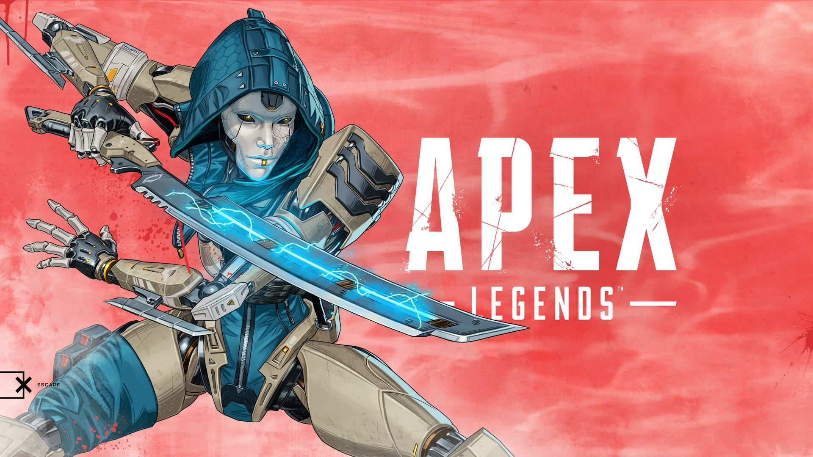

Ash

Passive
- Ash's map shows the location of recent deathboxes. Press X on a deathbox to mark surviving attackers (once per box).
Tactical
- Throw a spinning snare that damages and tethers the first enemy that gets too close.
- Unlike other projectiles, the trajectory is a straight line, but the travel speed is very slow
Ultimate
- Tear open a one-way portal to a targeted location.
- Ash immediately enters the phase tear upon activation.